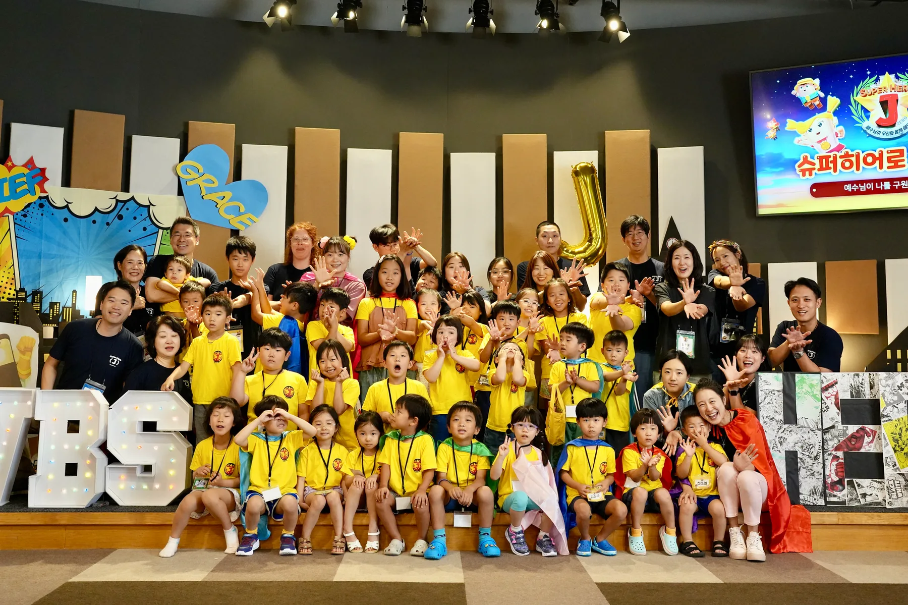
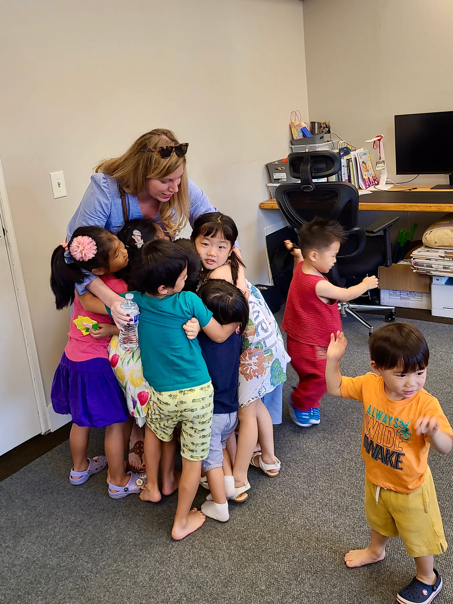
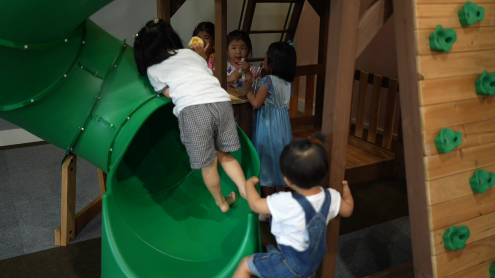
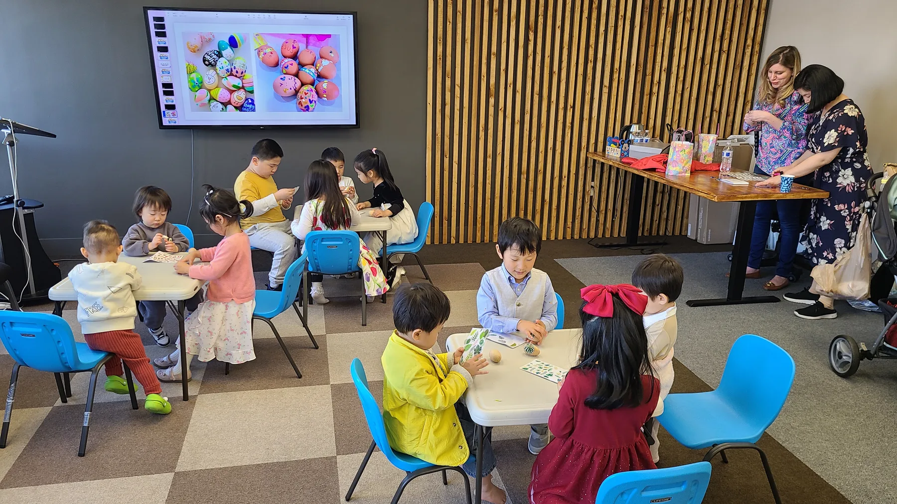
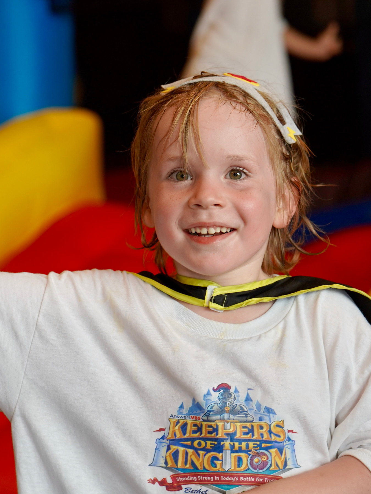
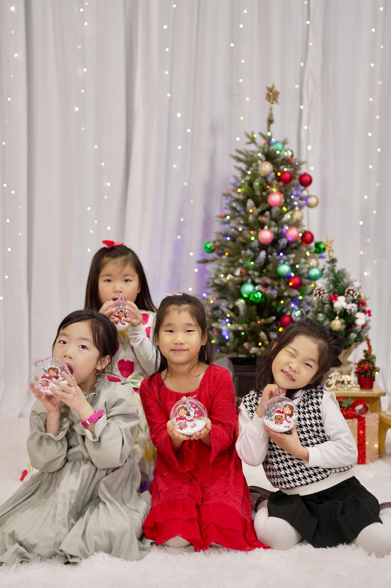
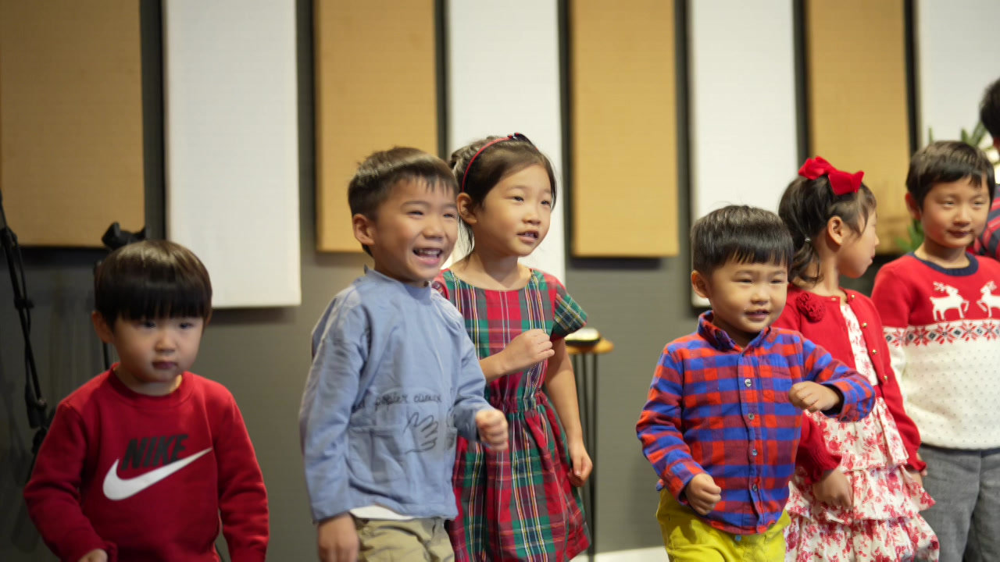
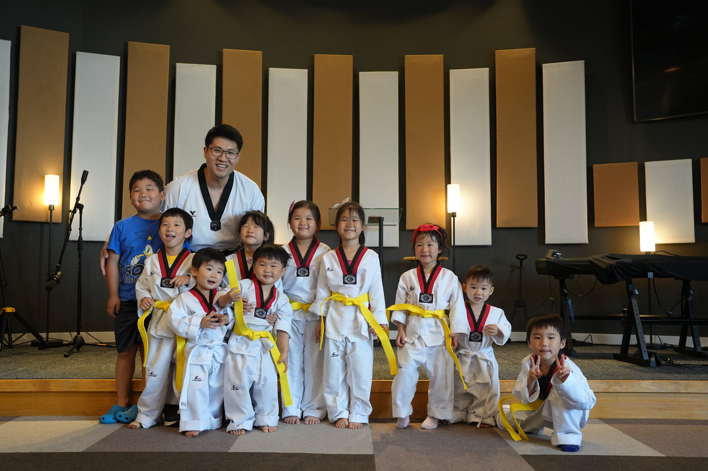
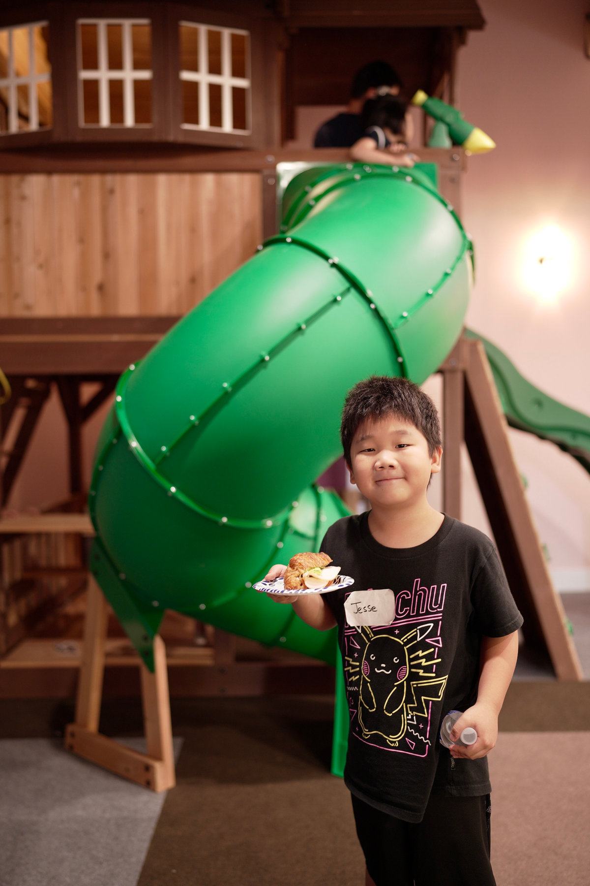

어린이부Children's Ministry
예수님이 좋아요We Love Jesus Christ
교회 건물에 들어서자마자 보이는 커다란 실내 놀이터는 KCPC가 무엇을 소중히 여기는지 알려 줍니다. KCPC 어린이부는 미취학 아동부터 4학년까지 주일 오전 11시에 예배를 드리며, 주예찬 목사님께서 지도해주십니다. KCPC는 30-40대 성도들이 많아 어린 자녀들이 많습니다. 아이들도 행복한 KCPC에서 함께 신앙생활해요~
When you walk into the church building, you can't miss the big indoor playground. It shows how much KCPC cares about kids. Our children's ministry holds Sunday worship services at 11 a.m. for preschoolers through 4th graders, led by Pastor Yechan Ju. Since most of our members are in their 30s & 40s, we have many children at KCPC. They love being part of our joyful church family, where they learn about faith and have fun together.
섬기는 사람들Our team
- 담당주예찬 목사Rev. Yechan Ju
- 교사박유나, 김은진, 최희정, 황선하, 최중선Teachers
- 문의yechani33@gmail.com
언어 안내 · Language
어린이부 예배와 교육은 한국어로 진행되지만, 영어가 모국어인 자녀를 위한 선생님도 계십니다.
While the children's worship and education are conducted in Korean, we also have a teacher available for children whose native language is English.
KCPC 2025 Summer VBSJuly 10 (Thu) – 13 (Sun)







